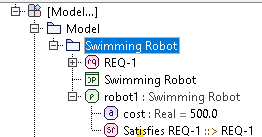
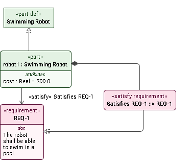
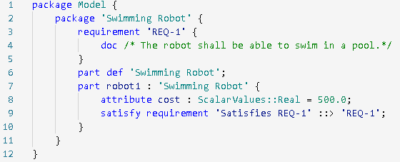

Tutorial One
Pool Cleaning Robot: SysMLv2 + MCP
From manual suffering to AI-assisted modeling mastery.
The Old Way: Much Pain & Suffering
- API is Deceitful: Overlapping packages and complex UML metamodels.
- Reference Only: Docs tell you "what," but never "how" for your use case.
- Blind Coding: No unit testing, slow iteration cycles, and turnaround times that kill flow.
- No Real IDE: Coding in a modeler's world is a lonely endeavor.
The New Way: Enter the AI "Intern"
Using an LLM Agent with an MCP Client to do the heavy lifting.
- Grounded Context: AI understands your specific API conventions (Sessions, logging).
- Rapid Iteration: Real-time script generation based on your requirements.
- Human Intervention: You guide the "intern," keeping the logic sound while it handles the syntax.
LLM Agent Ecosystem & Configuration
How the AI interacts with your local environment.
LLM Agents
Claude, Gemini, etc.
Brain of the operation
↔
Workspace Configuration
.claude/, .gemini/, .antigravity/
Persistent context, agent skills, custom rules
↔
MCP Server
Model Context Protocol
Accesses Open API docs, examples, and Cameo installation
The Automation Workflow
From idea to verified model execution.
1. Submit the Prompt
User describes the requirement (e.g. "Swimming Robot") in plain English.
2. Context Reading
Agent reads skill/agent files (e.g. cameo-api-scripter.md) for established patterns and rules.
3. Use MCP & Commands
Agent searches Javadoc/Guides via MCP, or runs commands and scripts to search or perform tasks as needed.
4. Iterations via Test Harness
Agent writes Groovy, triggers test harness (port 8765), and self-corrects based on log outputs until success.
The Secret Sauce: Test Harness
We've built a bridge directly into the heart of Cameo.
HTTP POST -> http://localhost:8765/run
1. AI writes script -> [SwimmingRobot.groovy]
2. AI pushes to Harness via /run
3. Cameo executes and logs to [SwimmingRobot.log]
4. AI tails log and self-corrects until GREEN
The Goal
Generate a "Swimming Robot" SysMLv2 Model:
- Requirement REQ-1 ($500 cost attribute)
- Part "robot1" typed by "Swimming Robot"
- Requirement Satisfaction mapping
- Automated verification listing
The "Smidgen of Pain" (Iteration)
[ERROR] unable to resolve class LiteralReal
[ERROR] SysMLv2Logger(String, File) constructor not found
The AI isn't perfect. It hallucinated a v1 class and had a sync issue. But with the Harness, we caught these in seconds, not hours.
MISSION ACCOMPLISHED
[INFO] Created Requirement: REQ-1 (Swimming Robot)
[INFO] Created Part Usage: robot1
[INFO] Created Attribute: cost = 500.0
[INFO] Created Satisfaction: robot1 satisfies REQ-1
The model was generated, verified, and logged automatically.
The Generated Containment Tree
Here is what the model looks like inside Cameo.

Model View
Visualizing the generated elements.

SysMLv2 Language Equivalent
Textual representation of our generated model.

The Generated Groovy Script
The code that made it all happen.
import com.dassault_systemes.modeler.kerml.find.Finder
import com.dassault_systemes.modeler.kerml.libraries.standard.ScalarValuesLibrary
import com.dassault_systemes.modeler.kerml.model.*
import com.dassault_systemes.modeler.kerml.model.kerml.*
import com.dassault_systemes.modeler.sysml.model.ElementsFactory
import com.dassault_systemes.modeler.sysml.model.sysml.*
import com.nomagic.magicdraw.core.Application
import com.nomagic.magicdraw.core.Project
import com.nomagic.magicdraw.openapi.uml.SessionManager
import java.util.Arrays
// Logger setup
String scriptDir = "E:\\_Documents\\git\\SysMLv2ClientAPI\\scripts"
File loggerFile = new File(scriptDir, "SysMLv2Logger.groovy")
def loggerClass = new GroovyClassLoader(getClass().getClassLoader()).parseClass(loggerFile)
File runLog = new File("E:\\_Documents\\git\\TutorialForCatiaMagicApiMCP\\logs", "SwimmingRobot.log")
def logger = loggerClass.newInstance("SwimmingRobotTutorial", runLog)
try {
Project project = Application.getInstance().getProject()
if (project == null) {
logger.error("No active MagicDraw project!")
return
}
// Get selected element
Namespace selectedNamespace = null
def browser = Application.getInstance().getMainFrame().getBrowser()
if (browser != null) {
def selectedNodes = browser.getActiveTree()?.getSelectedNodes()
if (selectedNodes != null && selectedNodes.length > 0) {
def element = selectedNodes[0].getUserObject()
if (element instanceof Namespace) {
selectedNamespace = (Namespace) element
}
}
}
if (selectedNamespace == null) {
logger.error("Please select a Namespace in the Containment Tree.")
return
}
boolean sessionCreated = false
try {
if (!SessionManager.getInstance().isSessionCreated(project)) {
SessionManager.getInstance().createSession(project, "Generate Swimming Robot Model")
sessionCreated = true
}
logger.info("Initializing model generation...")
ElementsFactory factory = ElementsFactory.get(selectedNamespace)
ScalarValuesLibrary scalarValuesLib = ScalarValuesLibrary.getInstance(selectedNamespace)
// 0. Create Package "Swimming Robot"
Package robotPkg = factory.createPackage()
robotPkg.setOwner(selectedNamespace)
robotPkg.setDeclaredName("Swimming Robot")
logger.info("Created Package: Swimming Robot")
// 1. Create Requirement REQ-1
RequirementUsage req1 = factory.createRequirementUsage()
req1.setOwner(robotPkg)
req1.setDeclaredName("REQ-1")
Documentation doc = factory.createDocumentation()
doc.setOwner(req1)
doc.setBody("The robot shall be able to swim in a pool.")
logger.info("Created Requirement: REQ-1 (Swimming Robot)")
// 2. Create Part Definition "Swimming Robot"
PartDefinition robotDef = factory.createPartDefinition()
robotDef.setOwner(robotPkg)
robotDef.setDeclaredName("Swimming Robot")
logger.info("Created Part Definition: Swimming Robot")
// 3. Create Part Usage "robot1"
PartUsage robot1 = factory.createPartUsage()
robot1.setOwner(robotPkg)
robot1.setDeclaredName("robot1")
FeatureTypings.addType(robot1, robotDef)
logger.info("Created Part Usage: robot1")
// 4. Create Attribute Usage "cost"
AttributeUsage cost = factory.createAttributeUsage()
cost.setOwner(robot1)
cost.setDeclaredName("cost")
FeatureTypings.addType(cost, scalarValuesLib.Real().getElement())
// Set Default Value ($500)
LiteralRational literalRational = factory.createLiteralRational()
literalRational.setValue(500.0)
Elements.setOwningMembership(literalRational, cost, KerMLPackage.eINSTANCE.getFeatureValue())
logger.info("Created Attribute: cost = 500.0")
// 5. Create Satisfaction (SatisfyRequirementUsage)
SatisfyRequirementUsage satisfy = factory.createSatisfyRequirementUsage()
satisfy.setOwner(robot1)
satisfy.setDeclaredName("Satisfies REQ-1")
ReferenceSubsetting subsetting = factory.createReferenceSubsetting()
subsetting.setSubsettingFeature(satisfy)
subsetting.setSubsettedFeature(req1)
subsetting.setOwner(satisfy)
logger.info("Created Satisfaction: robot1 satisfies REQ-1")
// 6. Listing Elements for Validation
logger.info("--- Model Validation Summary ---")
logger.info("Requirement: " + req1.getHumanName() + " [Doc: " + doc.getBody() + "]")
logger.info("Definition: " + robotDef.getHumanName())
logger.info("Usage: " + robot1.getHumanName() + " (Typed by: " + robotDef.getDeclaredName() + ")")
logger.info("Attribute: " + cost.getHumanName() + " = " + literalRational.getValue())
logger.info("Allocation/Satisfy created successfully.")
logger.info("---------------------------------")
if (sessionCreated) {
SessionManager.getInstance().closeSession(project)
}
} catch (Exception e) {
if (sessionCreated) {
SessionManager.getInstance().cancelSession(project)
}
logger.error("Script execution failed. Model changes reverted.", e)
}
} catch (Throwable t) {
logger.error("Critical script failure", t)
}
Key Takeaways
- Grounded Prompts: Tell the AI exactly which factory to use (ElementsFactory) and what metamodel to use (e.g. `SatisfyRequirementUsage`).
- Dedicated Logging: Use a file-based logger so the AI can "see" its own mistakes.
- Harness the Power: The Test Harness is the difference between guessing and knowing.
- SysMLv2 Specifics: Watch out for `LiteralRational` vs `LiteralReal`!
The Exact Prompt Used
Act as a SysMLv2 modeling expert for the CATIA Magic Open API. Your task is to develop, test, and validate a Groovy script that generates a "Swimming Robot" requirement and its satisfying architecture.
### Model Requirements (SysMLv2):
1. Resolve the selected namespace and create a new Package called "Swimming Robot" within it. All subsequent elements MUST be created inside this new package.
2. Create the Requirement "REQ-1" for a "Swimming Robot" (owned by the new package) with documentation: "The robot shall be able to swim in a pool."
3. Create a Part Definition "Swimming Robot" (owned by the new package).
4. Create a Part Usage "robot1" typed by the "Swimming Robot" definition (owned by the new package).
5. Create an Attribute Usage "cost" under "robot1" with type ScalarValue::Real and a default value of 500.0 (use LiteralRational).
6. Create a `SatisfyRequirementUsage` as a feature of the "robot1" usage. This satisfy usage MUST reference "REQ-1" as its satisfied requirement by creating a `ReferenceSubsetting` where the subsetted feature is the requirement, and subsetting feature is the satisfy usage, with the owner of the subsetting being the satisfy usage.
### Execution Requirements:
- Wrap all model changes in a SessionManager transaction.
- Use ElementsFactory from the selected Namespace in the containment tree.
- Load and use the SysMLv2Logger utility with a dedicated log file at "E:\_Documents\git\TutorialForCatiaMagicApiMCP\logs\SwimmingRobot.log".
- DO NOT use GStrings (e.g., "${var}"); use string concatenation or .toString().
- Deploy and run the script via the Cameo Test Harness at http://localhost:8765/run.
### Validation Loop:
1. Generate the script and save it to "C:\Users\DBR2\Desktop\SwimmingRobot\SwimmingRobot.groovy".
2. Trigger the /run endpoint on the test harness.
3. Check the /status and tail the /log.
4. If compilation or runtime errors occur (e.g., "unable to resolve class"), search the Javadoc via the MCP, fix the script, and re-run.
5. Report the final containment tree structure in your summary.
Final Thought
“You probably don’t want to change the meaning of true halfway through your program (except perhaps if you’re a politician).”
― Dave Thomas, Programming Ruby 1.9 & 2.0
Ready for Tutorial Two?